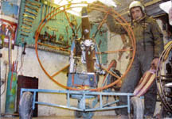
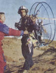

|
Mehmet
Kuzucu (47), bugüne kadar 58 uçuþ gerçekleþtirdi. Çevresinde
"Pervaneli Hezarfen" olarak tanýnan Kuzucu, Ege Üniversitesi'nde
öðrenim gören öðrencilere uçuþ dersleri veriyor.
Kuzucu'nun
iþ makineleri operatörlüðü, balýkçýlýk, su tesisatçýlýðý,
araba tamirciliði ve tornacýlýk gibi birçok mesleði var. 1995
yýlýndan beri Sarnýç'ta açtýðý küçük dükkanda bisiklet ve
motosiklet tamiri yapýyor. Bunlarýn yaný sýra Ýzmirli mucit,
Türk Hava Kurumu'na ait bazý uçaklarýn bakýmýna yardým etmiþ
ve teorik eðitimde kullanýlan üç aracýn da üretimini yapmýþ.
Ýlkokulu
7 yýlda zorlukla bitiren Kuzucu, pervaneli paraþüt fikrinin
televizyonda izlediði yamaç paraþütü görüntülerinden sonra
oluþtuðunu söylüyor. Kuzucu, çöpten topladýðý malzemelerle
motoru nasýl yaptýðýný þöyle anlatýyor: "Çöplüklerden bulduðum
araba mazot pompasý kayýþý, pervanenin çevrilmesini saðlýyor.
Çöplüklere atýlan su arýtma cihazlarýnýn hurdalarýna kaynak
yaparak motorun egzozunu, hurdalýða atýlan belediye otobüsü
koltuklarýndan ise uçarken oturduðum koltuðu yaptým. Pervane
tahtalarýný marangozlara yaptýrdým. Motorun çerçevesini oluþturan
borularý hurdacýlardan aldým. Bisiklet ve motosiklet parçalarýndan
da motorun göbeðini oluþturdum. Çöplüklerden bulduðum eski
bir kaskýn üzerine, telefon ahizelerinden yaptýðým kulaklýklarý
taktým. Kablolarla baðlantý yaparak, telsizle aþaðýdakilerle
iletiþimi saðlýyorum." Yaptýðý motora yamaç paraþütü takan
Kuzucu, deneme uçuþlarýný gerçekleþtirdikten sonra Güzelbahçe'de
tepelik alanlardan uçmaya baþladýðýný ifade ediyor. Motoru
yaparken birçok insanýn, "baþaramazsýn" dediðini belirten
Kuzucu, yamaç paraþütüyle uçarken insanlarýn þaþkýn bakýþlarla
kendisini seyrettiðini söylüyor. Kuzucu, havadayken yaþadýðý
duygularý þöyle dile getiriyor: "Uçmak, inanýlmaz bir duygu.
Bin metre yükseklikte, kuþ sürülerinin arasýna karýþýyorsunuz.
Bazen çocuklarýn uçurduðu uçurtmalarý elime alarak onlara
þaka yapýyorum. Ýzmir'in havadan dolaþtýðým ilçelerinde boþ
alanlara iniþ yaptým. Ýndiðim yerlerde birçok dost edindim.
Ýnsanlarýn bazýlarý, bana uzaylý gibi bakýyordu."
7
sene içinde farklý yerlerden 58 defa uçuþ yapan Kuzucu, bin
metre yükseklikte kesintisiz 3 saat dolaþabiliyor. Telsiz
vasýtasýyla oðluyla haberleþerek rota tayinini yapýyor. Uçmadan
önce depoya 5 litre benzin koyduðunu ve motor vasýtasýyla
havalanabildiðini aktaran Kuzucu, "Havadayken motoru kapatarak,
yamaç paraþütü vasýtasýyla dolaþýyorum. Ýneceðim zaman veya
acil durumlarda motoru çalýþtýrýyorum." diyor.
Delta
Havacýlýk ve Spor Kulübü'nde, yamaç paraþütüyle uçmak isteyen
kiþilere ders veren Kuzucu'ya, bir süre sonra Ege Üniversitesi
Daðcýlýk ve Havacýlýk Kulübü'nden de talep gelmiþ. Kuzucu,
hafta sonlarý Güzelbahçe'deki tepelik alanda, uçmaya meraklý
60 üniversite öðrencisine yamaç paraþütüyle uçuþ dersi veriyor.
Dükkanýnda
eski bisiklet ve motosiklet parçalarýndan çok sayýda araç
üreten Kuzucu'nun hedefi büyük. Her akþam Ýngilizce çalýþan
Kuzucu, imkan bulmasý halinde ulaþýmda arabalarýn yerini alacak
uçan cihazlar üretmek istediðini vurguluyor. Kuzucu, "Eðer
projemi hayata geçirebilirsem, insanlar evinden iþyerine araba
yerine uçarak gidecek. Ýster 100 metre, ister 2 metre yükseklikten
uçabilecekler." þeklinde konuþuyor.
|